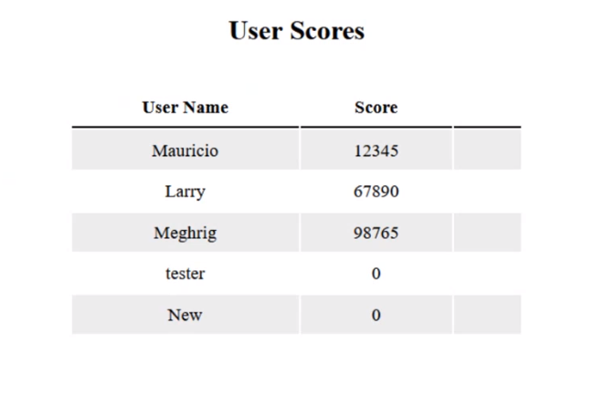

Play the most competitive dinosaur game
You can play google's offline dino game with your webcam on this website. This site also lets you keep track of the score of everyone who plays it, making it the most competitve dino game.
Sign-up now!Play with your webcam
To play the game, you need to have a webcam pointed at you. So whenever you raise your hand, the dinosaur jumps, making this the most unique dino game out there.

Scoreboard
Everytime you play the dino game, the scoreboard updates so your score and username is displayed for others to see. This makes the game very competitive, since you can play to get better scores than your friends.
Instructions
- You need to have a webcam pointed at you to play the game.
- Once the webcam is on, you need to raise your hand to jump in the dinosaur game while avoiding to hit the cacti along the way.